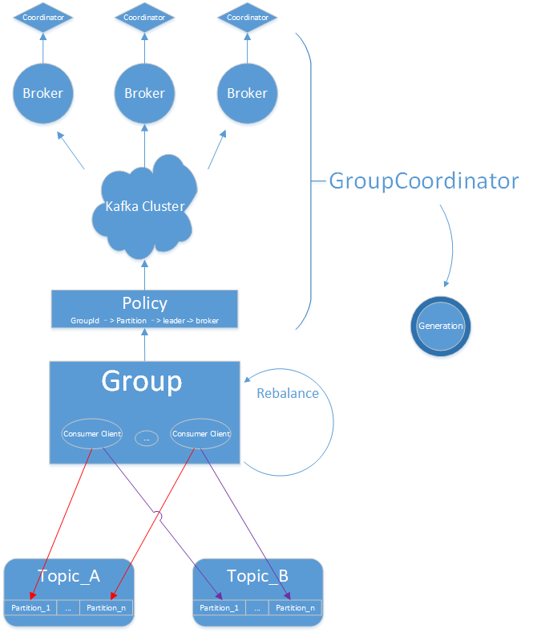
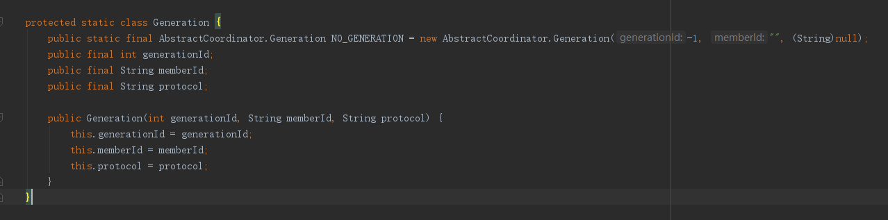
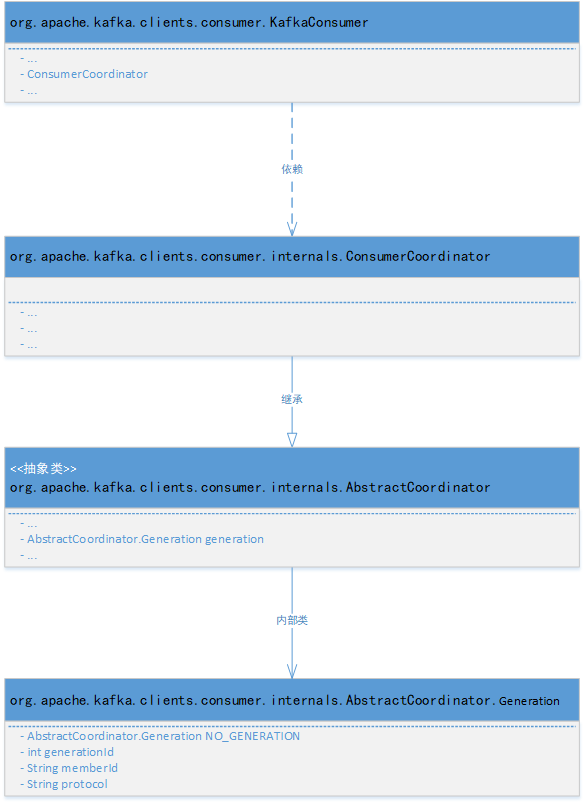
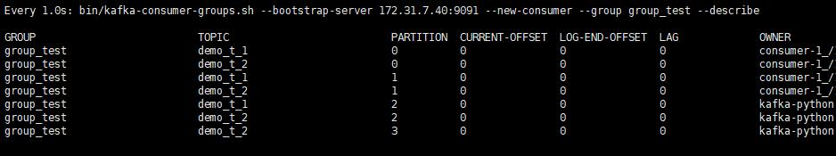
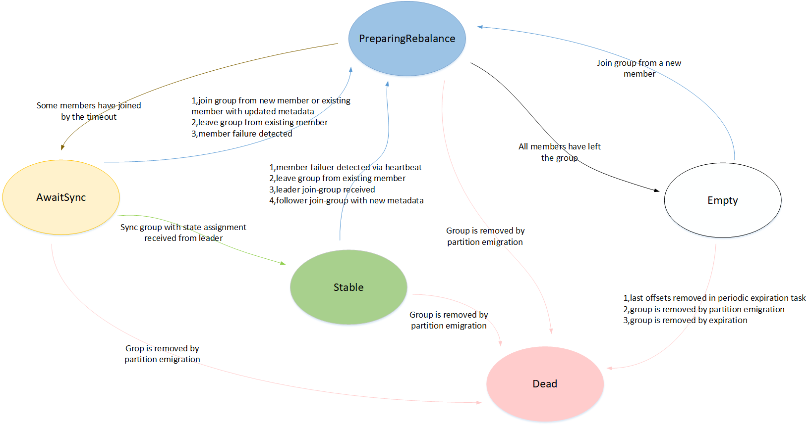

Kafka理论之Consumer Group & Coordinator
归纳总结Group Cooridinator的基本作用，Partition的分配策略和分配机制；了解Rebalance的触发机制和主动监控；
Consumer Group
提及Consumer Group，最先想到的就是Group与Consumer Client的关联关系：
- 1，Consumer Group用group.id(String)作为全局唯一标识符
- 2，每个Group可以有零个、一个或多个Consumer Client
- 3，每个Group可以管理零个、一个或多个Topic
- 4，Group下每个Consumer Client可同时订阅Topic的一个或多个Partition
- 5，Group下同一个Partition只能被一个Client订阅，多Group下的Client订阅不受影响
Consumer Group的作用主要有：管理Partition的Offset信息；管理Consumer Client与Partition的分配。正因为所有Partition的Offset信息是由Group统一管理，所以如果一个Partition有多个Consumer，那么每个Consumer在该Partition上的Offset很可能会不一致，这样会导致在Rebalance后赋值处理的Client的消费起点发生混乱；与此同时，这种场景也不符合Kafka中Partition消息消费的一致性；因此在同一Group下一个Partition只能对应一个Consumer Client。
接下来将通过介绍Group的管理者Coordinator来了解Group是如何管理Offset；此外通过介绍Group的Rebalance机制了解Partition分配的原理，并介绍如何通过代码实现Rebalance的监控。如图是个人总结绘制的大致逻辑图

Group Coordinator
Group Coordinator是一个服务，每个Broker在启动的时候都会启动一个该服务。Group Coordinator的作用是用来存储Group的相关Meta信息，并将对应Partition的Offset信息记录到Kafka内置Topic(__consumer_offsets)中。Kafka在0.9之前是基于Zookeeper来存储Partition的Offset信息(consumers/{group}/offsets/{topic}/{partition})，因为ZK并不适用于频繁的写操作，所以在0.9之后通过内置Topic的方式来记录对应Partition的Offset。
每个Group都会选择一个Coordinator来完成自己组内各Partition的Offset信息，选择的规则如下：
- 1，计算Group对应在__consumer_offsets上的Partition
- 2，根据对应的Partition寻找该Partition的leader所对应的Broker，该Broker上的Group Coordinator即就是该Group的Coordinator
Partition计算规则
1 | partition-Id(__consumer_offsets) = Math.abs(groupId.hashCode() % groupMetadataTopicPartitionCount) |
其中groupMetadataTopicPartitionCount对应offsets.topic.num.partitions参数值，默认值是50个分区
查看指定Partition各Replica的分布情况
1 | bin/kafka-topics.sh --zookeeper <address:port> --topic __consumer_offsets --describe |
Group Coordinator Generation
Group Coordinaror是Group Rebalance中不可或缺的一环，因为Coordinator负责记录了每次Rebalance后的Partition分配结果，因此Kafka为Coordinator赋予了一个Generation的概念。Generation(谷歌翻译为“代”)可以通俗的理解为版本的概念，Generation未开始时值为-1，在第一次Rebalance后Group进入Stable状态时值为1，此后每发生一次Rebalance，Generation的Id会自增长加1。

网上有的人把Generation归结为Group的概念，说Group是有版本(代)的概念，个人觉得这是不太恰当的，因为从源码层面看，Generation是抽象类AbstractCoordinator的内部类；个人感觉Group更像是一个逻辑侧面的概念，用来规范、管理一些消费端抽象抽来的一种约束手段。

Partition Assignment
Partition的分配策略和分配执行均是有Consumer Client完成的，而不是由Server(Group Coordinator)决定、执行的。因为如果换做用Server端实现，则不仅会增加Broker的负担，同时无法灵活的改变分配策略。
Assignment Strategy
Kafka目前支持RangeAssignor、RoundRobinAssignor两种内置的分配策略，在0.11.x以后还内置了一种分配策略StickyAssignor；当然因为Partition的分配策略是有Client控制的，所以Kafka支持用户自定义分配策略。这里详细介绍一下前两种分配策略
RangeAssignor
按照范围进行划分：对于每个被订阅的Topic，尽可能将连续的Partition分给同一Consumer Client。假设一个Group下有m个Consumer同时订阅一个Topic，该Topic有n个Partition，则具体的分配算法如下：
- 1，将Consumer Client按照命名排序
- 2，计算平均每个Consumer可以分到的Partition个数 => n / m
- 3，计算平均分配后剩余的Partition个数 => n % m
- 4，如果n%m等于零，则代表所有客户端可以一次平均分配到n/m个Partition；如果n%m大于零，则前n%m个Consumer分配到(n / m + 1)个Partition，剩下的Consumer(m - n % m)分配(n / m)个Partition
RangeAssignor分配策略是基于一个Topic而已的，如果同时订阅多个Topic，则分别对每个Topic进行Range分配，接下来举三个例子加以阐述：
Eg1：有两个Consumer(分别为C1，C2)，同时订阅两个Topic(T1, T2)，每个Topic都有4个Partition，则最终的分配结果为：
C1：T1P0，T1P1，T2P0，T2P1
C2：T1P2，T1P3，T2P2，T2P3
Eg2：有两个Consumer(分别为C1，C2)，同时订阅两个Topic(T1, T2)，每个Topic都有3个Partition，则最终的分配结果为：
C1：T1P0，T1P1，T2P0，T2P1
C2：T1P2，T2P2
Eg3：有两个Consumer(分别为C1，C2)，同时订阅两个Topic(T1, T2)，T1有3个Partition，T2有4个Partition，则最终的分配结果为：
C1：T1P0，T1P1，T2P0，T2P1
C2：T1P2，T2P2，T2P3

RoundRobinAssignor
轮询分配：将Group内所有Topic的Partition合并到一起，然后按顺序依次将Partition分配给所有订阅该Topic的Consumer(按照name排序)；如果某个Topic只有一个Consumer订阅，则该Consumer将独自订阅该Topic下的所有Partition。在上述三种场景下的分配结果分别为
Eg1 => C1：T1P0，T1P2，T2P0， T2P2；C2：T1P1，T1P3，T2P1，T2P3
Eg2 => C1：T1P0，T1P2，T2P1；C2：T1P1，T2P0，T2P2
Eg3 => C1：T1P0，T1P2，T2P1，T2P3；C2：T1P1，T2P0，T2P2
Assignment Principle
- Step 1，GCR(GroupCoordinatorRequest)
- Step 2，JGR(JoinGroupRequest)
- Step 3，SGR(SyncGroupRequest)
首先根据GroupId选择对应的Coordinator(Step1)，然后Group内所有的Consumer Client向Coordinator发送JoinGroup请求，此时Coordinator会从所有Client中选择一个作为leader，其他的作为follower；leader会根据客户端所指定的分区分配策略执行分配任务，并将最终的分配结果发送到Coordinator(Step 2)；最后所有的客户端向Coordinator发送SyncGroup请求，用于获取Partition的分区结果(Step 3)。
分配逻辑的源码详解可参考Kafka源码深度解析－序列7 －Consumer －coordinator协议与heartbeat实现原理
Rebalance
Rebalance是一个分区-客户端重分配协议。旨在特定条件下，基于给定的分配策略来为Group下所有Consumer Client重新分配所要订阅的Partition。Rebalance是Consumer Group中一个重要的特性，也为Group提供了High Availability and Scalability。但同样Rebalance也存在相应的弊端：在Rebalance期间，整个Group对外不可用。
Rebalance 触发条件
- Group中有新Consumer加入
- Group中已有的Consumer挂掉
- Coordinator挂了，集群选出新Coordinator
- Topic新增Partition个数
- Consumer Client调用unsubscrible()，取消订阅Topic
Rebalance 过程
Rebalance的本质即就是Partition的分配；首先客户端会向Coordinator发送JGR，等待leader发送Partition分配结果到Coordinator后，然后再向Coordinator发送SGR获取分配结果。
Kafka通过Heartbeats(心跳)的方式实现Consumer Client与Coordinator之间的通信，用来相互告知对方的存在。如果Coordinator挂掉导致的Rebalance，则Kafka会重新选择一个Coordinator，然后所有的Client会执行JGR、SGR；如果由于Client的变化导致Rebalance，则会通知有效Client进行JGR、SGR。
session.timeout.ms：Consumer Session过期时间；默认为10000(10s)；这个值的大小必须介于broker configuration中的group.min.session.timeout.ms 与 group.max.session.timeout.ms之间。
heartbeat.interval.ms： 心跳间隔；默认为3000(3s)；通常设置值低于session.timeout.ms的1/3
后续会对消费中遇到的所有时间戳做进一步的归纳整理
Rebalance Listener
因为触发Rebalance的可能性太多，并且在实际的工作中并不是所有的Rebalance都是有益的，所以可以在代码层面实现对Rebalance的监控，从而根据真实的业务场景做出相应的对策。这里贴出监控Demo：通过在客户端维护Offset信息可以自定义控制消息的commit，尽可能保证Exactly Once语义，避免重复消费。
1 | /** |
Group State
最后贴一个大牛整理的Group状态机，其中的各种状态转换还未对其加以实践；以后有机会结合源码，再来做进一步的学习

图片来Matt’s Blog
参考